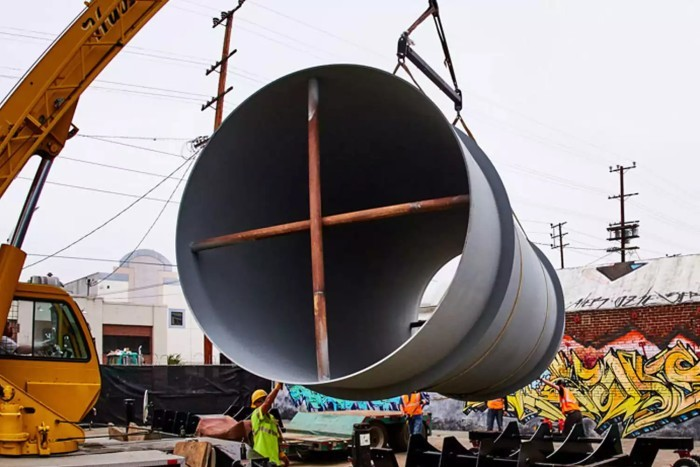

Hyperloop ведёт переговоры о запуске сверхзвукового поезда в РФ

Идея Илона Маска о строительстве сверхзвукового поезда в трубе с разряженным воздухом постепенно воплощается в жизнь. В США над проектом Hyperloop работают уже две компании: Hyperloop Transportation Technologies (HTT) и Hyperloop Technologies. Обе они приступили к строительству испытательных полигонов для тестирования технологии.
Илон Маск предполагал, что в первую очередь «Гиперпетля» должна связать Сан-Франциско и Лос-Анджелес. В дальнейшем сеть туннелей покроет всю территорию США, и не только США. Сейчас с инвесторами рассматривается проект о пуске сверхзвукового поезда в России — между Москвой и Санкт-Петербургом.
Транспортная система Hyperloop предполагает движение капсул на магнитной левитации по трубам в условиях низкого давления (почти вакуума) на скорости до 1220 км/ч. Строительство одного километра туннеля HTT оценивает в $3,1-12,5 млн за километр, что во много раз дешевле прокладки высокоскоростной железной дороги. Экономия достигается за счёт использования солнечных батарей на крыше туннеля, использованию энергии, вырабатываемой при торможении капсул, а также размещению труб на опорах, а не на самой земле.
Hyperloop Transportation Technologies планирует в течение трех лет построить в Калифорнии трек длиной 8 км, по которому можно было бы перевозить пассажиров (на рендере внизу), а Hyperloop Technologies сейчас строит тестовый трек к северу от Лас-Вегаса.
В то же время Главный исполнительный директор проекта Hyperloop Бибоп Греста рассказал в интервью RT, что в данный момент в России нашёлся частный инвестор, который заинтересован в реализации проекта сверхзвукового капсульного поезда. С ним ведутся переговоры.
«Мы ведём переговоры с российским частным инвестором. Чтобы осуществить проект в России, мы анализируем варианты строительства трубы между различными городами», — сказал он и добавил, что проектом заинтересовались на государственном уровне. «В России большие расстояния и большая плотность населения. Это идеальное место для строительства Hyperloop», — сказал Бибоп Греста.

Если такой проект будет реализован, то путь из Санкт-Петербурга в Москву займёт 35 минут.